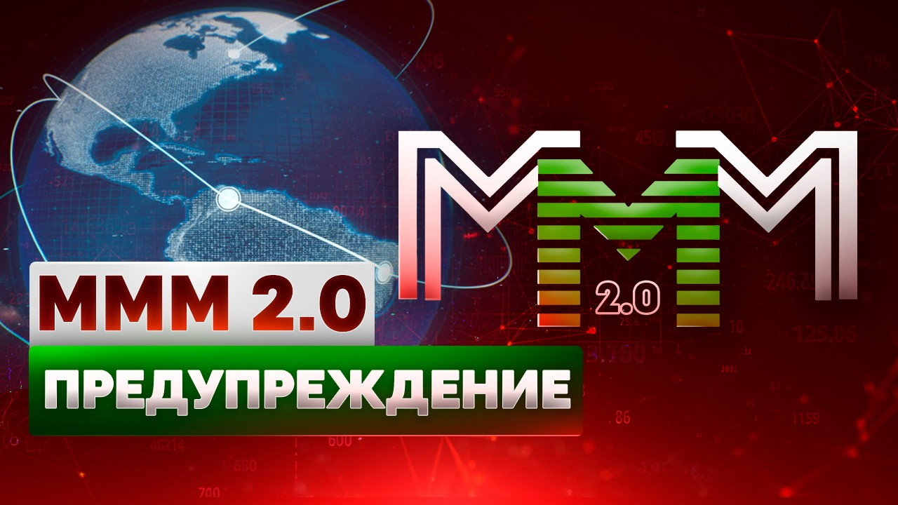

Регистрация в телеграм-боте
«Есть только два способа прожить свою жизнь.
Первый - так, как будто бы чудес не бывает.
Второй - как будто бы всё на свете – чудо»
Мир плох? Что ж – сделай его лучше!

"Отсутствие единых баз данных, серверов и центров управления. Распылённость! Паутина. Именно это и делает Систему такой, какой она мной изначально и замышлялась. Неуничтожимой и непобедимой. Никакими спецслужбами и никакими властями. Всего мира. Действуйте! Действуйте! действуйте! действуйте! Мы Можем Многое! Вместе".
Сергей Пантелеевич Мавроди
Для начала посмотрите это видео:
Внимание! МММ 2.0 - это неформальное объединение людей со всего мира, глобальная касса взаимопомощи. В МММ 2.0 люди безвозмездно помогают друг другу своими средствами лишь в надежде получить помощи больше, чем они оказали.
‼️Участие в МММ 2.0 сопряжено с абсолютным риском: Вы можете перевести свои средства другому человеку (участнику МММ 2.0), а Вам могут так ничего и не перевести без объяснения причин!
Я, Данил Юсупов, не даю Вам никаких гарантий ни в скрытой, ни в явной форме, что Вы вообще что-то получите! Я не даю никаких обещаний! В МММ 2.0 нет условий срочности и возвратности, нет никаких договоров (Вы безвозмездно переводите свои средства напрямую другим людям, что не запрещено законом).
У МММ 2.0 нет никакого юридического лица, соответственно, нет и единого счета, куда стекаются все средства участников, – здесь только люди (участники МММ 2.0), которые безвозмездно переводят друг другу напрямую свои средства: со своего банковского счета на банковский счет другому человеку, со своего криптокошелька на криптокошелек другому человеку. Что, повторяю, абсолютно законно (да это в принципе нельзя запретить никаким законом безвозмездно переводить свои средства другим людям).
По сути, это и есть Касса Взаимопомощи в чистом виде.
Здесь я просто пишу и высказываю своё личное мнение, делаю какие-то предположения, делюсь своими мыслями, ничего не гарантирую и не обещаю, не оказываю никаких услуг и ничего никому не пытаюсь продать. И вообще призываю всех поскорее отсюда бежать. Зачем вообще помогать друг другу!? Короче, бегите скорее и никогда сюда больше не возвращайтесь! И НЕ УЧАСТВУЙТЕ в МММ 2.0!
Не убежали? Читайте дальше!
Или нет. Вот ещё что. Небольшое отступление.
Прежде всего. Для информации. Мы так и живём до сих пор в рабовладельческом обществе. Как и тысячи лет назад. Ничего с тех пор по сути не изменилось. Разве что узы теперь экономические. Финансовые, если быть точнее. Вот и вся разница. А в остальном − то же самое всё. Есть рабы, есть Хозяева. Хозяева - это те, кто печатает деньги. Удивлены?
Далее. Что такое деньги? Да ничего! Nihil. Фантом. Пустота! Просто фантики, разноцветные, красиво оформленные бумажки со всякими там водяными знаками, гербами и картинками. (Обычно портретами великих людей. Так солидней. :-)) Они абсолютно ничем не обеспечены и печатаются Хозяевами в любых количествах и по своему усмотрению.
Эти фантики Хозяева раздают рабам потом как «плату за труд». И ещё отечески поучают их при этом с серьёзным и значительным видом, что «деньги-де надо зарабатывать − честно». А рабы − послушно внимают. Зомбированные с пелёнок разного рода "правильными" учебниками, книжками, фильмами, средствами массовой информации, вообще всей этой гигантской, отлаженной и безжалостно-эффективной государственной машиной для промывания мозгов (даже родители невольно участвуют в этой "социализации" -- собственноручно превращают своих чистых и непорочных детей в самых настоящих рабов!). Ничего другого рабы не знают, и им кажется, что так устроен мир, а иначе и быть не может. Но иначе быть − может!!
Что такое "финансовая пирамида"? Почему "пирамиды" преданы анафеме везде, во всех без исключения государствах? Даже в самых что ни на есть лояльных, свободных и демократичных? Почему с ними так безжалостно, упорно и последовательно борются? Азартные игры, наркотики в некоторых странах разрешены! но "пирамиды" запрещены − везде! Повсеместно. Почему так? Есть в этом нечто прямо-таки загадочное и мистическое. Никогда не задумывались?
Ну так, почему? Потому что «пострадают люди»? Ерунда!! Кого интересуют «люди»? Это быдло, эта жрущая и размножающаяся протоплазма, это многомиллиардное человеческое стадо! Эти бессловесные, забитые и покорные рабы! «Пострадают» они там или нет. Да кого это вообще волнует?!
Не говоря уж о том, что с какой стати они пострадать-то должны? Всего лишь очередной миф, один из очень и очень многих, из серии «честного зарабатывания денег». Что люди-де в "пирамиде" обязательно должны − «пострадать». А сама "пирамида" − рухнуть! (И когда же? Когда весь мир охватит? Ну, значит, пока у Вас есть хоть один неохваченный знакомый − спите спокойно. Да и это неверно. Всё равно не рухнет! Даже ещё устойчивей станет. :-))
Так почему же тогда всё-таки? Откуда такая ненависть и столь яростное неприятие? А? Сказать? Открыть уж Вам эту самую главную и страшную буржуинскую тайну? Только − тс-с-с!.. Никому ни слова! Договорились? Ладно, ну, тогда слушайте. :-))
ПОТОМУ ЧТО "ПИРАМИДЫ" ПРОИЗВОДЯТ… ДЕНЬГИ!!! Да-да-да, именно так! ДЕНЬГИ!! Из ничего, из воздуха! Так же точно, как из ничего, из воздуха производят их и сами Хозяева. И тоже при помощи "пирамид"! Доллар является "пирамидой" вовсе не случайно! Других механизмов для производства денег попросту не существует. Вообще! Только "финансовые пирамиды". Не верите? Тогда назовите мне хоть одну мировую валюту, "пирамидой" не являющуюся. Хоть одну-единственную! Евро?.. фунт?.. юань?.. А?.. Швейцарский франк, может быть?.. Что?! Те же российские власти охотно ругают последнее время доллар, но скромно умалчивают при этом, что и рубль − такая же в точности "пирамида". Ничем не лучше. (Да хуже даже! На порядок. Базирующаяся на долларе. "Пирамида" на "пирамиде". :-))
Да, "пирамиды" производят деньги. А это позволено только − Хозяевам. Это их святая и неотъемлемая прерогатива и их непреложная монополия. Право на производство денег и делает их − Хозяевами. А тут их производят − рабы!!!
В результате всё рушится. Рвётся мгновенно вся та липкая паутина лжи и лицемерия, которая заботливо, тщательно и неустанно опутывает человека ежеминутно, ежесекундно, с самого момента его рождения и до самой смерти. Пелена спадает. Морок рассеивается. Человек обнаруживает вдруг, что финансовая клетка − распахнута! Он − свободен! Сначала он просто изумляется и не верит сам себе: как это он получает деньги просто так, задаром, ни за что? И ему не надо больше сидеть в этой клетке? «Честно работать?» Этого же не может быть в принципе, это невозможно! Ему всю жизнь с самых пелён внушали, что это невозможно!! Что надо трудиться!.. работать в поте лица!.. (на кого? :-)) зарабатывать!.. честно!... Это правильно, это справедливо! И только тогда ты что-то получишь. Что-то тебе дадут. (Кинут! От щедрот. :-)) А теперь вдруг выясняется, что − не надо?! Что это совсем даже и не обязательно?! Как же так??!!.. Затем он начинает думать. Так, значит, деньги вовсе не мерило труда? Раз их могут просто раздавать, разбрасывать, дарить по своему желанию? И мир от этого не рушится! А что же они тогда? Если не мерило труда?.. Да неужели же это… просто бумажки?! Просто − фантики??!! Затем он осматривается вокруг и видит рядом людей, всё так же тупо и монотонно, не поднимая головы, работающих в соседних клетках… за эти бумажки… за эти никчёмные фантики… Людей, ещё вчера бывших его друзьями, близкими… А сегодня их разделяет пропасть. Они по-прежнему рабы, а он − нет! Он вкусил запретного плода − свободы! Он узнал, что это такое − чувствовать себя свободным. Чувствовать себя − Человеком! И этого он уже никогда не забудет.
Иными словами, "пирамиды" делают людей − Людьми. Они делают их − СВОБОДНЫМИ! Они производят СВОБОДУ! Генерируют, несут её! Людям. Обычным, рядовым, простым людям. (А уж как люди распорядятся этой свободой, это другой вопрос.) Это и есть первопричина. Всего! Именно поэтому-то "финансовые пирамиды" так боятся и ненавидят. Хозяева. В этом-то и вся суть.
P.S. Впрочем, неспроста я "финансовую пирамиду" везде в кавычки заключаю. Это просто для понимания, словосочетание такое удобное, которое у всех вроде как на слуху. Во всех законах развитых стран есть четкое определение «финансовой пирамиды», которое предполагает обещание повышенной доходности. Именно поэтому МММ 2.0 не является финансовой пирамидой, – здесь нет никаких гарантий и обещаний. В то же время уже ни для кого не секрет, что все без исключения финансовые институты − банки, страховые, фонды и пр. − финансовые пирамиды в чистом виде, а законны они только потому, что принадлежат хозяевам, которые эти самые законы и пишут.
P.P.S. Между прочим, именно поэтому-то власти всех стран так активно и боролись с Сергеем Мавроди и его МММ! Что в 90-х годах XX века, что в 10-х − XXI. Нарекли его "мошенником", "аферистом" и пр. и пр. СМИ постоянно лили на него и на МММ грязь. Без остановки вообще!!.. Вам не кажется всё это весьма и весьма странным? Подозрительным? Те, кто довёл страну до её сегодняшнего состояния своей экономической-финансовой одарённостью и политическим могуществом − наши белые и пушистые ангелы − так активно клеймят Человека "мошенником"? Пытаются его оболгать? За что? Что он такого сделал? Что его можно было по два раза судить за одно и то же?! Он же своё отсидел, но к нему впоследствии почему-то ещё и гражданские иски от людей принимали?! Он, что, как физлицо выпускал в своё время билеты МММ?! Да и никаких гарантий он никогда не давал − здесь всё всегда было и будет честно и открыто. И участники это прекрасно знают! И понимают, что на самом деле происходит. И кто в итоге всех кинул (причём уже неоднократно) − всем тоже известно. ...В своё время именно этот факт произвёл на меня сильное впечатление. "Как же так? − спрашивал я себя, − неужели один Человек может мешать целой системе? Неужели он представляет для неё такую опасность?!" (а разве будут столько внимания уделять тому, кто безвреден и безобиден? законы именно под его деятельность писать?) Поразмышляйте над этим на досуге.
ПРЕДУПРЕЖДЕНИЕ!!!
Перед добровольным и безвозмездным оказанием помощи ("покупка" абстрактных Мавро) каждый участник обязан ознакомиться с этим предупреждением!
ОСТОРОЖНО!
Здесь люди БЕЗВОЗМЕЗДНО переводят друг другу свои деньги!
Участвуя в МММ 2.0, Вы крайне рискуете, поскольку безвозмездно переводите свои средства другим людям. Не забывайте об этом!
В МММ 2.0 нет никаких гарантий и обещаний ни в явной, ни в скрытой форме! Нет никаких договоров! Нет никакой организации! Нет никакого привлечения денежных средств и (или) иного имущества! Нет никаких вложений! Никакой предпринимательской деятельности! Никакой доходности! Никаких выгод и прибылей! Никакой инвестиционной деятельности! Нет государственной регистрации и, следовательно, никакого юридического лица тоже нет! Нет никаких операций с ценными бумагами, никаких отношений с профессиональными участниками рынка ценных бумаг, никаких ценных бумаг Вы не приобретаете! (А они Вам нужны?) Нет вообще ничего!! Я просто рекомендую людям добровольно и безвозмездно помогать друг другу своими свободными личными средствами.
Люди добровольно и безвозмездно переводят свои средства другим точно таким же Людям, оказывая им посильную финансовую помощь в столь непростые времена. Безо всяких гарантий, обязательств и обещаний — просто переводят и всё! Это же их средства, частная собственность, — вот люди и делают с ними всё, что хотят. Одни люди переводят свои средства другим людям. Без всяких договоров, условий срочности и возвратности и пр. — без гарантий, обязательств и обещаний, повторяю. Так они помогают друг другу в это сложное время. Никаким законом такие переводы запретить невозможно в принципе! Ибо тогда нужно будет запретить частную собственность. И никаким налогом такие переводы не облагаются, поскольку никаких источников дохода здесь НЕ-Е-ЕТ!!! Нет, нет и нет! И быть не может. В принципе. Во веки веков. Аминь. Ну, усвоили?
Я не даю Вам никаких ни гарантий, ни обещаний. Ни в явной, ни в скрытой форме. (В отличие, к примеру, от тех же банков. Которые — дают! Охотно. Что никогда не разорятся.)
Вообще говоря, любые гарантии в этой жизни — ложь. Где, скажем, гарантии того, что завтрашний день вообще наступит?..
Не создаю ошибочных представлений, что Вы здесь можете быстро обогатиться. Наоборот, потеряете всё на хрен!! Вы же свои средства другому точно такому же человеку добровольно и безвозмездно переводите — оказываете ему посильную финансовую помощь. Всё! Забудьте о них!! С этого момента это его средства, а НЕ Ваши!! Вам могут не перевести деньги без объяснения причин!! У Вас теперь есть только абстрактные Мавро, «курс» которых отражает лишь Вашу возможность запросить помощь, не более того. Никто Вам не гарантирует, что эта помощь будет оказана. Ибо гарантий таких не существует в природе.
Тут нет никаких правил. Единственное правило: правил нет вообще! Даже если Вы будете чётко следовать всем моим этим бесплатным советам и рекомендациям, Вы всё равно можете всё потерять: Вам средства могут так и не перевести, помощь Вам могут так и не оказать. Без всяких на то причин и объяснений.
По всей видимости, я даже и не вполне вменяем. Ненормальный! (Был бы нормальным, стал ли бы я всё это затевать?)
По заверениям всех абсолютно ведущих финансистов, экономистов, экспертов и пр. и пр. такую высокую "доходность" («курсы» абстрактных Мавро ПРЕДПОЛОЖИТЕЛЬНО растут темпом от 20% в месяц!) обеспечить невозможно в принципе, и всё это мошенничество чистой воды и «наглая и бесстыдная» афера.
Участвовать в которой не следует ни в коем случае и ни при каких обстоятельствах!!! Так вот послушайте умных людей — НЕ УЧАСТВУЙТЕ ЗДЕСЬ! НЕ переводите никому свои средства!
Как всё это работает — я и сам не знаю и не ведаю и «объяснить» ничего не могу. Хрен его знает как! Да и работает ли вообще?! Неизвестно. Но в МММ94, однако, — работало. И в SG — работало. Хотя там всё росло в два раза быстрее.
(Темпами — до 100% в месяц. Цена на "акции-билеты" удваивалась ежемесячно).
И в МММ в 2011/12 гг, кстати, тоже всё прекрасно работало! Пока ангелы наши белые и пушистые не вмешались и всё не разрушили, арестовав Мавроди по очередным надуманным причинам. Правда, в МММ-2011 чисто технически немного по-другому всё было устроено – там счета десятников были, которых сегодня нет: все средства безвозмездно переводятся строго между участниками напрямую!
Как так у Сергея Мавроди всё это получалось — я не постигаю. И не понимаю. И не вкуриваю. (Да сам, блин, удивляюсь!!) Он, с Его же слов, как безграмотный Аладдин, который нашёл волшебную лампу. Потёр − явился джинн. Выполнил все желания. И опять в лампу спрятался. Но откуда этот джинн явился и какова его природа (и как он в этой лампе вообще умещается-то, прах его побери?!) — Аладдину неведомо. Обращаю Ваше особое Внимание, что я даже не Сергей Мавроди! И куда уж мне, безызвестному Данилу Юсупову, до Аладдина и его лампы?!
Зачем всё это сообщаю? А низачем! Зудит. Пришла идейка, хочется же высказаться. Показать, какой я вумный. «Ну, сумасшедший! Что возьмёшь?»
Но Вы-то, Вы-то — здравомыслящие ведь люди? Вы-то — не втянетесь! Не дадите себя втянуть!! Ведь — нет? Не дадите? Правда?
И вообще, я лгу. Знаете этот парадокс? Если я лгу, то я говорю правду, а если я говорю правду, то я лгу. Утверждение одновременно и истинное, и ложное. Знаменитый парадокс лжеца!
Короче говоря. Я Вас призываю, убеждаю, упрашиваю и умоляю:
ДА НЕ УЧАСТВУЙТЕ ВЫ В ЭТОЙ ПРОКЛЯТОЙ МММ 2.0!
ПОВТОРЯЮ РУССКИМ ЯЗЫКОМ И В ТО САМОЕ УХО, В КАКОЕ СЛЕДУЕТ:
НУ ЕГО НА ФИГ!
ЖИВИТЕ ВЫ И ДАЛЬШЕ СЕБЕ НА ОДНУ ЗАРПЛАТУ!
НЕ УЧАСТВУЙТЕ! НЕ УЧАСТВУЙТЕ! НЕ УЧАСТВУЙТЕ!
НЕ! НЕ!! НЕ!!!
БЕГИТЕ КАК МОЖНО СКОРЕЕ С ЭТОГО САЙТА/БЛОГА/ТЕЛЕГРАМ-КАНАЛА/ТЕЛЕГРАМ-БОТА И НИКОГДА БОЛЬШЕ СЮДА НЕ ВОЗВРАЩАЙТЕСЬ!!!!!
ВАМ ВСЁ ЯСНО?
Если же Вы тоже сумасшедший и после всех этих моих предупреждений, убеждений, упрашиваний и умоляний… умолений?.. всё же решили безвозмездно перевести свои средства другому неизвестному человеку и таким образом поучаствовать в МММ 2.0 (не верю просто, что такие найдутся! ), то нажмите: СЮДА
P.S. Ах, да! Действует МММ 2.0 абсолютно ЗАКОННО. Повторяю ещё раз — люди добровольно и безвозмездно переводят свои средства (крипту) другим точно таким же людям. Просто так! Без всяких гарантий, без обязательств, без обещаний, без условий срочности и возвратности, без каких-либо договоров и пр. Это же их частная собственность, вот они и делают с ней всё, что пожелают, что посчитают нужным. Более того, деятельность участников кассы по оказанию взаимопомощи не просто законна! Она регламентируется и поощряется главным законом РФ, что, в общем-то, предельно логично — Конституцией Российской Федерации, статьёй 39, частью 3 — читайте там Внимательно. "Друг другу надо помогать!" -- однозначно говорит главный закон Нашей страны. Таким образом, одни люди оказывают другим посильную безвозмездную финансовую помощь, только и всего. А значит, никакого привлечения средств или иного имущества тут нет и быть не может. Все статьи УК РФ мимо. Участники МММ 2.0 добровольно и безвозмездно переводят свои средства другим людям. Всё это законно! Поскольку закона не нарушает. Сам я ничего и никого никуда не привлекаю — я лишь открыто говорю о том, что в сегодняшней непростой экономической ситуации друг другу необходимо помогать! Вот и сам помогаю — советами, рекомендациями и консультациями.
Сергей Мавроди комментирует "закон против Финансовых пирамид", послушайте Внимательно:
P.P.S. У всех наверняка возникает вопрос: а на фига всё это нужно лично мне, Данилу Юсупову?? Какова моя цель? Объясню! На самом деле всё очень корыстно. И даже примитивно. Но нет, это не деньги! Как Вы уже успели подумать. Деньги при таких масштабах дел уже не катят. Как верно подмечал в своё время Сергей Пантелеевич Мавроди. Да и если б мне нужны были деньги, стал бы я именно его имя использовать? Какой в этом смысл? Очернять себя − с "мошенником" связываться?!..
Жизнь научила меня, что нельзя быть богатым среди бедных, честным среди врунов, образованным среди безграмотных, здоровым среди больных, смелым среди трусов, счастливым в то время, когда тебя окружают несчастные люди. Нельзя! Ведь все Мы взаимозависимы!! И не только Мы. Всё вокруг, весь этот мир пронизан принципами взаимозависимости! Всё взаимосвязано на всех уровнях. И всё всегда стремится к равновесию. Поэтому, если сам хочешь жить в достатке, то прежде нужно этот достаток обеспечить и окружающим тебя людям (даже по той поверхностной логике, чтобы они не хотели тебя из зависти обокрасть или даже убить).
Понимаете, голодный не может подавать, ибо нечем! − не может человек о духовном думать и развиваться, пока голоден − для начала людей нужно банально накормить. Обеспечить их базовые материальные потребности. Чтобы в дальнейшем у них высвободилось время на то, чтобы стать образованными, самодостаточными, смелыми, здоровыми, честными и богатыми как материально, так и духовно! Счастливыми Людьми!! Я покажу всем, что, взаимодействуя определенным образом, ДЕЙСТВУЯ ПРИ ЭТОМ ЧЕСТНО И ОТКРЫТО, даже сегодня можно Жить по-Человечески! А не выживать, влача гнусное рабское существование. Ведь только тогда и сам я стану − Человеком. Мне всего лишь хочется, чтобы меня окружали Разумные Люди, а не затюканные рабы. Хочется простой Человеческой Жизни сегодня и сейчас, а не когда-то там (в "загробной жизни").
Вы сами-то не устали от всего этого тотального лживого ужаса? А? Не устали внушать себе гнусный рабский принцип − "..от меня же ничего не зависит.."? Не опостылело терпеть всё это кредитно-ипотечное унижение, участником которого всем нам приходится "невольно" являться? Не устали своими же руками рыть себе яму, поддерживая эту несправедливую систему!?.. "Выхода нет!" Ещё как есть! Вот он!! Альтернативная система! Честная и открытая! АНТИСИСТЕМА!! ...
Манипулировать людьми, превращая их в тупых покорных рабов, не задающих лишних вопросов, очень просто (обманывать всех вокруг, а потом обворовывать). Гораздо сложнее сделать людей Свободными. (Так же как думать о чем-то хорошем гораздо сложнее, чем о чем-то плохом. Плохие мысли будто сами собой приходят. Никогда не задумывались − почему так происходит?.. Так ведь чтобы думать о чём-то хорошем, нужно прикладывать усилия: включать воображение, логику и пр. Вообще, чтобы поверить во что-то хорошее и доброе, нужно просто сделать добро другим! Нужно действовать! Делать это "хорошее". А не сидеть сложа руки, утешая и оправдывая себя, мол, "...да от меня же ничего не зависит..." Ещё как зависит! Всё, что Вы видите вокруг, всё, чем Вы пользуетесь в повседневной жизни, создано людьми, которые действовали несмотря ни на что. Действовали вопреки! Вопреки всем этим рабским "у тебя ничего не получится", "аха-ха-ха, ну ты и сумасшедший, гы-гы-гы" и т.п.).
Да, всё это сложно, трудно, но − возможно! Так же, как возможна вся эта существующая лживая система, эта треклятая финансовая рабская антиутопия (между прочим, "зло" добивается результатов в т.ч. потому, что добро смиренно бездействует), так и возможна Антисистема − честная и открытая. Свободная! Человеческая!! И за неё стоит жить и бороться. Конечно, изменить мир в одиночку нельзя. Изменить можно только себя, своё отношение, свои принципы, взгляды и мировоззрение. Конструктивно взаимодействуя друг с другом и осознавая тотальную взаимозависимость. Именно поэтому Сергей Мавроди и назвал МММ-2011 в своё время, "расшифровал": Мы Можем Многое!
МЫ! ВСЕ ВМЕСТЕ!!
В этой жизни всё зависит от каждого из Нас.
Аминь.
В подтверждение того, что хозяевам денег нужны тупые, затюканные, покорные рабы, предлагаю посмотреть этот коротенький ролик:
Регистрация в телеграм-боте